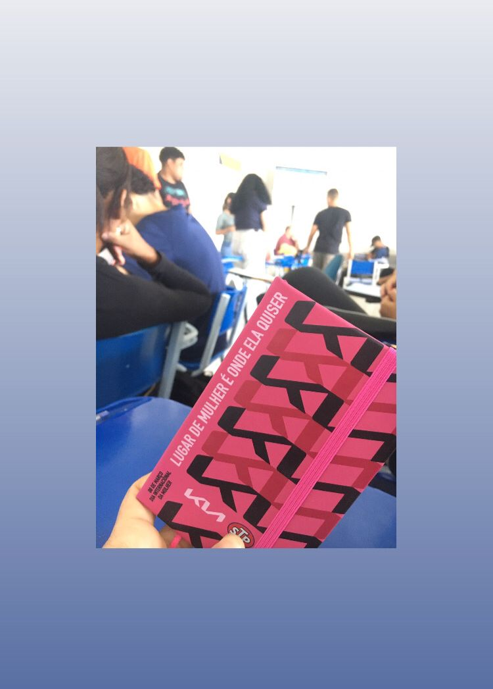

18 de Março de 2022
Análise e desenvolvimento de sistema
Iniciei em 2022 a faculdade de análise e desenvolvimento de sistema, tecnólogo. com intuito de fazer transição de
carreira, pois estava na área de comunicação, trabalhando em uma rádio como roteirista comercial.
Sentia fome de algo novo na minha vida, gosto de me desafiar, e o mundo da tecnologia me desafia o tempo todo. mesmo no
desconforto de todo início, sinto e comemoro minhas pequenas evoluções. acredito que temos que saber admirar o processo
também. aprender a não desacreditar de si nos primeiros desafios é uma das maiores atitudes de autoamor e lembrar sempre
que não temos controle de tudo mas temos escolhas!
Desenvolvedora Front-end
Seja o que quiser ser!

"Trago dentro do meu coração,
como num cofre que se não pode fechar de cheio,
todos os lugares onde estive,
todos os portos a que cheguei,
todas as paisagens que vi através de janela ou vigias,
ou de tombadilhos, sonhando,
e tudo isso que é tanto, é pouco para o que eu quero."